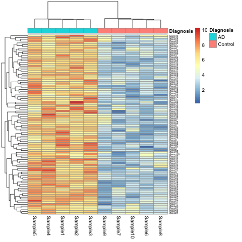

Content from Many Facets of Reproducibility
Last updated on 2025-04-14 | Edit this page
Overview
Questions
- What is reproducibility?
Objectives
- Describe a conceptual framework for reproducibility.
- Explain how and why adopting reproducible practices benefits research.
Introduction
What does reproducibility mean? This is not and easy question to answer because it has different definitions depending on the discipline. Reproducibility is distinct from replicability, although the two are often used interchangeably (Barba, 2018, Schloss, 2018).To start we need to state our definition so that we can all be on the same page.
Reproducible research Authors provide all the necessary data and code to run the analysis again, re-creating the results.
Replication A study that arrives at the same scientific findings as another study, collecting new data and completing new analyses.
Replication requires reproducibility but has a higher goal to re-run an entire study rather than only re-create original results using the same data and code. In replication you’re running a whole new study, obtaining new data, and running a new analysis.
| Methods | Same Data | Different Data |
|---|---|---|
| Same methods | Reproducibility | Replicability |
| Different methods | Robustness | Generalizability |
The table above is adapted from The Turing Way. When you use the same methods and the same data as the original study and get the same results, that is reproducibility. If you get the same results using the same data but different methods, such as using a different statistical approach, that is robustness. That means the study’s findings are robust to changes in the methods. If you are gathering new data and rerunning another study with the same methods and get the same findings, that study is replicable. Finally, what we all are hoping to be able to achieve is to be able to not only replicate a study and get the same results, but to have those results replicate to different populations or different analysis methods. That is the gold standard of reproducibility and means you are making a big contribution to research. (Reproducibility for Everyone, Schloss, 2018)
Reproducibility is not all that matters
Reproducibility is only one aspect we need to try to improve in science. There are several others as well that influence scientific rigor. We should aim to do a little better every time we carry out a study and be aware of these other aspects of rigorous science.
Factors that decrease reproducibility
There are many factors affecting reproducibility: technical, human, study design and statistics, and problems with rewards and incentives. It’s complex in that issues with reproducibility arise out of many smaller decisions and environments that we encounter in research.
| Factors | Examples |
|---|---|
| Technical | Bad reagents or cell lines, natural variability |
| Study design & statistics | Design flaws, misused methods, batch effects |
| Human | Poor record keeping or sharing, confirmation bias |
| Rewards & incentives | Fraud, paywalls, perverse incentives |
Other examples, like mistakes and lack of training, encompass all of these factors - technical, study design, statistical, human, and rewards and incentives. It’s best to think of this this as an opportunity for us to do better, as a community and as as individuals over time, rather than being overwhelmed by what has been described as a reproducibility crisis. We need to learn a little bit about how to do science better with the new methods, information, and understanding that we gain. Think about reproducibility as an incremental process. Every time you start a new project, you can make one change to make it a little bit more reproducible, to make it a little bit more transparent. Then you’re on the right path towards improving and accelerating your work. So better methods, more data, more power. Larger studies, less pressure to publish, fewer incentives to be first rather than right, sharing reagents and code, and sharing all of your information about your statistical packages.
We need more incentives to actually reproduce each other’s work, and for labs to reproduce each other’s work. In this lesson we will stay with the simple case of results reproducibility - using the same data and code to generate the same results (or not!). This gives us the opportunity to look at some of issues that prevent even the simplest case of results reproducibility, so that we might adopt some new practices or change our existing ones a bit.
Challenge 1: The efficient technician
Your technician colleague finds a way to simplify and expedite an
experiment. The experiment applies four different wheel-running
treatments to twenty different mice over the course of five days. Four
mice are treated individually each day for two hours each with a random
selection of the four treatments. Your clever colleague decides that a
simplified protocol would work just as well and save time. Run treatment
1 five times on day 1, treatment 2 five times on day 2, and so on. Some
overtime would be required each day but the experiment would be
completed in only four days, and then they can take Friday off! Does
this adjustment make sense to you?
Can you foresee any problems with the experimental results?
Which factor(s) decreasing reproducibility does this example
demonstrate?
Since each treatment is run on only one day, the day effectively
becomes the experimental unit (explain this). Each experimental unit
(day) has five samples (mice), but only one replication of each
treatment. There is no valid way to compare treatments as a result.
There is no way to separate the treatment effect from the day-to-day
differences in environment, equipment setup, personnel, and other
extraneous variables.
This is an example of study design flaws that decrease reproducibility.
It can be remedied with training about batch effects.
Callout
Challenge 1 describes a case of batch effect, which is a common problem in biomedical studies. Data are collected in batches that confound treatment effects by running all of one category (e.g. treatment, sex, strain) at the same time. This makes it impossible to quantify the effect of the treatment.
“To consult the statistician after an experiment is finished is often merely to ask him to conduct a post mortem examination. He can perhaps say what the experiment died of.” - Sir Ronald A. Fisher, First Session of the Indian Statistical Conference, Calcutta, 1938
Key Points
- Reproducibility has many definitions.
- We define reproducibility here as using the same data and methods as the original study.
- Adopting reproducible practices strengthens science and makes it more rigorous.
Content from Case Studies in Irreproducibility
Last updated on 2025-04-14 | Edit this page
Overview
Questions
- What are some common reasons for irreproducibility?
Objectives
- Describe a conceptual framework for reproducibility.
- Explain how and why adopting reproducible practices benefits research.
Problems and solutions to irreproducible research
From here we will look at some common problems in irreproducible research. We will also discuss ways to overcome these problems. Recall that our definition of reproducible research means that authors provide all data and code to run the analysis again, re-creating the results.
| Methods | Same Data | Different Data |
|---|---|---|
| Same methods | Reproducibility | Replicability |
| Different methods | Robustness | Generalizability |
We will also limit these examples to those that we can examine as analysts. The system of rewards and incentives is one that we must work within for the time being, with an eye toward improving the culture of science. It is not something that we can change in a day however. As analysts we also can’t fix some of the human or technical issues that impact an experiment. We can investigate study design and statistics, however, in data analysis.
| Factors | Examples |
|---|---|
| Technical | Bad reagents or cell lines, natural variability |
| Study design & statistics | Design flaws, misused methods, batch effects |
| Human | Poor record keeping or sharing, confirmation bias |
| Rewards & incentives | Fraud, paywalls, perverse incentives |
Case 1: The gene set that characterizes early Alzheimer’s disease
K.Q. Watkins and coauthors describe a unique gene set characteristic of early onset Alzheimer’s Disease. The gene expression heatmap from their paper clearly delineates Alzheimer’s patients from a neurotypical control group.
 Watkins, K. Q., et al. (2022). A unique gene expression signature characterizes early Alzheimer’s disease. Nature Alzheimer’s, 33(3), 737-753.
Use the R script, the data, and the metadata to reproduce this plot.
Can you find other ways to present the (meta)data in the heatmap? What do alternate ways of presenting the data show you?
This is a simulated study and publication. Any resemblance to real persons or real studies is purely coincidental.
- You can replace
DiagnosiswithBatchin the call thepheatmap.
R
pheatmap(expr_matrix,
annotation_col = metadata["Batch"],
fontsize_row = 5)
This will show the same heatmap, though in this one the genes delineate the batch rather than disease state. This is an example of complete confounding between batch and disease state. All of the Alzheimer’s samples were run in the first batch and all the controls in the second. There is no way to disentangle disease state from batch.
Key Points
- Reproducibility has many definitions.
- We define reproducibility here as using the same data and methods as the original study.
- Adopting reproducible practices strengthens science and makes it more rigorous.